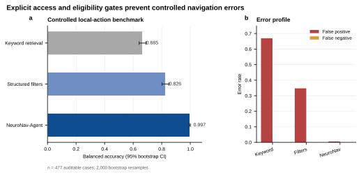
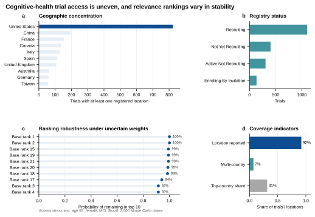

最小画像
仅使用疾病、年龄、登记性别类别和国家。
关键词检索会返回疾病名称相似、年龄不符、停止招募或本地没有登记地点的研究。NeuroNav-Agent 把检索、有限预筛、排序、稳健性分析和证据审核组成一个可复现工作流。
系统保留完整执行轨迹。自然语言模型可以作为可选交互层，但不能覆盖年龄、性别、状态、地点或证据审核结果。
仅使用疾病、年龄、登记性别类别和国家。
调用 ClinicalTrials.gov API 并保存时间戳快照。
逐项记录 pass、fail、caution 或 unknown。
分解疾病、状态、年龄、性别、地点和完整度得分。
改变权重 2,000 次，观察候选能否稳定进入前十。
检查分数范围、来源字段、人工复核和安全边界。
基准病例来自真实登记字段，并通过改变疾病、年龄、性别或本地登记地点构造反例。置信区间来自 2,000 次 bootstrap 重采样。
| 方法 | 平衡准确率 | 95% CI | 误报率 |
|---|---|---|---|
| 关键词检索 | 0.665 | 0.642–0.690 | 0.669 |
| 部分结构化筛选 | 0.826 | 0.802–0.849 | 0.347 |
| NeuroNav-Agent | 0.997 | 0.993–1.000 | 0.006 |


重新下载会得到新的动态快照，因此数值可能随注册信息更新而变化。元数据文件会记录检索时间、关键词和样本数。
一句话总结：NeuroNav-Agent 的贡献不是声称“AI 能替医生做决定”，而是展示如何把患者导航拆成可追踪、可拒答、可统计验证的智能体工作流。